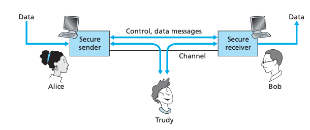
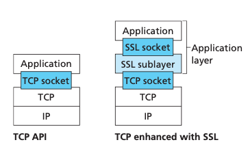
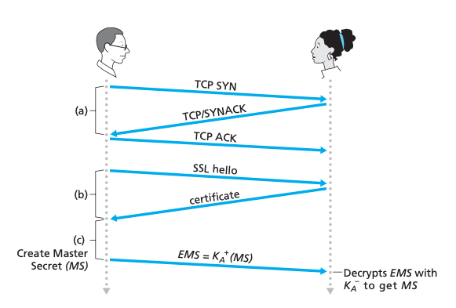
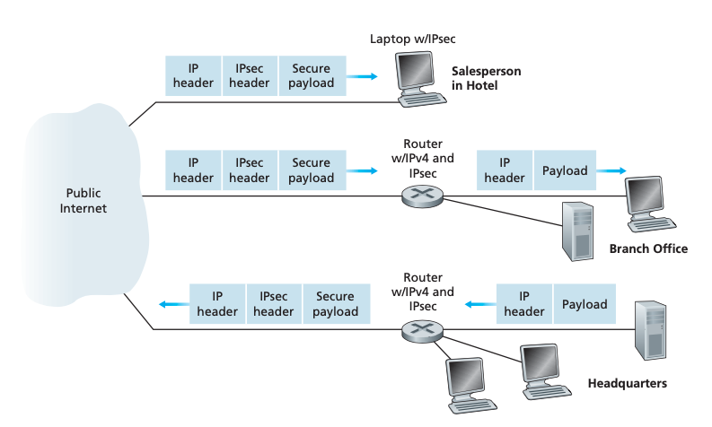
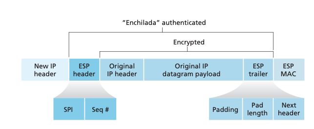
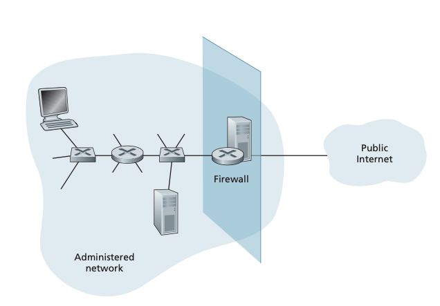
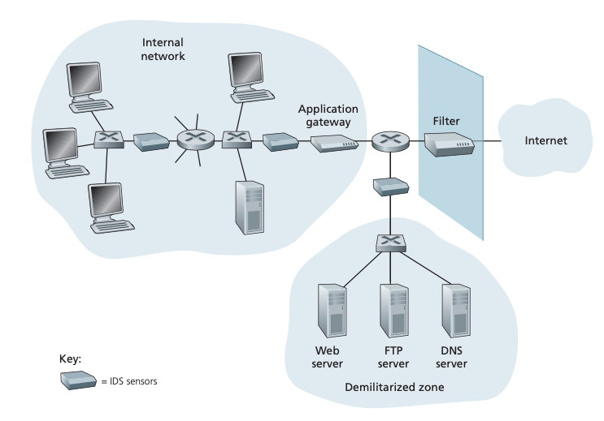

Sistemas Operativos y Redes
Seguridad en redes
Semestre 2022-1
Cristian Ruz - cruz@ing.puc.cl
Departamento de Ciencia de la Computación
Pontificia Universidad Católica de Chile
Seguridad en redes
Tecnologías para proveer seguridad en un canal de comunicación
- TCP sobre SSL
- IPSec
- VPNs
- Firewalls

TCP sobre SSL
Protección en la capa de transporte
- SSL: Secure Sockets Layer
- TLS: Transport Layer Security
- Protocolo de capa de aplicación
- Para efectos prácticos funciona en capa de transporte

TCP sobre SSL
Protección en la capa de transporte
- Handshake normal
- Bob verifica que Alice es realmente Alice
- Bob envía a Alice una Master Secret Key (MS)
- Usando la MS, ambos generarán llaves simétricas para su sesión

IPSec y VPNs
Protección en la capa de red
- Encriptación del payload antes de pasar a la Internet
- Para routers fuera de la red privada, es un paquete IP regular
- Entrada y salida de la VPN se hace en capa de red, en un router o en el host

IPSec y VPNs
Protección en la capa de red
- ESP: Encapsulation Security Payload
- MAC: Message Authentication Code (para integridad)

Firewalls
Protección operacional
- Combinación de hardware y software
- Todo el tráfico debe pasar por el firewall
- Solo el tráfico autorizado puede atravesar el firewall
- El firewall debe ser impenetrable sin autorización

Firewalls
Tres tipos de filtros:
- Filtros de paquetes
- IP, TCP, UDP, puertos, SYN, ACK, ICMP, ...
- Filtros con estado
- Para conexiones TCP. Ej: ACKs solo para conexiones establecidas
- Gateways de aplicaciones
- Para usuarios autenticados en aplicaciones.
Firewalls
IDS
- IDS: Intrusion Detection System
- Analizan comportamiento de secuencias de paquetes
- Port scan, TCP scan
- DoS scan
- Worms, viruses, app vulnerabilities
- Realizan DPS: Deep Packet Inspection
- DMZ: Zona desmilitarizada
- Acá se encuentran los servicios que necesitan comunicación con el exterior
